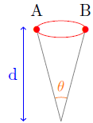

Modèles d'univers de Friedmann-Lemaître
Les modèles d'Univers de Friedmann-Lemaître répondent au principe cosmologique et à la relativité générale. Le principe cosmologique postule qu’à un instant donné, toutes les observables ont la même mesure en tout point et dans toutes directions. Autrement dit, l’univers est homogène et isotrope. La relativité générale est une théorie géométrique relativiste de la gravitation (TGRG) c'est-à-dire une théorie qui relie la géométrie du contenant espace-temps à son contenu matière-énergie et qui, localement, rejoint la relativité restreinte.
Dans une TGRG la symétrie du contenu doit donc se retrouver dans celle du contenant. On montre que la métrique d'espace-temps la plus générale répondant à une TGRG et au principe cosmologique est celle de Robertson Walker (RW) ou Friedmann-Lemaître-Robertson-Walker (FLRW). On appelle métrique le carré ds2 de l'élément de longueur spatio-temporelle. Celui de RW a pour expression :
$$ds^{2}=-R^{2}(t)\left[ \frac{dr^{2}}{1-kr^{2}}+rd\theta^{2}+r^{2}sin^{2}\theta d\phi^{2} \right]+c^{2}dt^{2}$$
k = -1, 0 ou +1 selon les trois possibilités pour la courbure spatiale (3D) de l'espace : négative, nulle ou positive et r est la coordonnée radiale.
R(t) est la seule inconnue en dehors de k.
La fonction R(t) est le " facteur d'échelle " qui multiplie la distance entre points fixes de l'espace. Le temps cosmique t est le même partout (sources et observateur étantt supposés immobiles et donc dans le même référentiel).
En suivant la trajectoire d'un photon (ds=0) on en déduit que si une source émet au temps te deux signaux lumineux séparés de dte, un observateur les recevra au temps t0 séparés de dt0 avec
$$\frac{dt_{0}}{dt_{e}}=\frac{R(t_{0})}{R(t_{e})}$$
Appliqué aux périodes ou longueurs d'onde de la lumière cela s'écrit$$\frac{T_{0}}{T_{e}}=\frac{\lambda_{0}}{\lambda_{e}}=1+z=\frac{R(t_{0})}{R(t_{e})}$$
L'équation différentielle complète (1917) de la relativité générale d'Einstein s'écrit:
$$\frac{1}{2}g_{\mu \nu}R-R_{\mu \nu} - \Lambda g_{\mu \nu} = \frac{8\pi G}{c^{4}}\tau_{\mu \nu}$$ $$ \frac{k}{R^{2}}+\frac{\dot{R}^{2}}{c^{2}R^{2}} - \frac{\Lambda}{3}=\frac{8\pi G \rho}{3c^{2}}$$
Si la TGRG est la relativité générale, en introduisant les coefficients (gμν) de dr2, dθ2, dφ2 et dt2 de la métrique RW dans l'équation d'Einstein elles se transforme en 2 équations différentielles (les équations de Friedmann-Lemaître, FL1 et FL2) sur le facteur d'échelle R(t) dans lesquelles p(t) et ρ(t) (pression et masse volumique) sont les deux seuls paramètres physiques décrivant le contenu : p et ρ sont spatialement homogènes (pas fonction de r,θouφ ) d'après le principe cosmologique.
$$-\frac{k}{R^{2}} -\frac{\dot{R^{2}}}{c^{2}R^{2}}-\frac{2\ddot{R}}{Rc^{2}}+\Lambda=\frac{8 \pi G p}{c^{4}}$$
On en déduit FL3
$$\frac{d(\rho R^{3})}{dR} + 3p\frac{R^{2}}{c^{2}}$$
FL2 peut s'écrire :
$$\dot{R^{2}} = H_{0}^{2}R_{0}^{2}\left[ \Omega_{r0} \frac{R_{0}^{2}}{R^{2}} + \Omega_{m0} \frac{R_{0}}{R} +\Omega_{\Lambda 0} \frac{R^{2}}{R_{0}^{2}}+\Omega_{k0} \right]$$
avec :
$$ \Omega_{m}(t)=\frac{8\pi G \rho_{m}(t)}{3H^{2}(t)},\Omega_{r}(t)=\frac{8\pi G \rho_{r}(t)}{3H^{2}(t)},\Omega_{\Lambda}(t)=\frac{\Lambda c^{2}}{3H^{2}(t)},\Omega_{k}(t)=\frac{kc^{2}}{R^{2}(t)H^{2}(t)}$$
G est la constante de gravitation universelle.
Ωr(t) est le paramètre de densité de rayonnement. Sa valeur présente Ωr0 est la mieux connue car la densité d'énergie lumineuse est essentillement celle du rayonement de fond cosmologique (RFC). On peut vraisemblablement lui rajouter celle des neutrinos primordiaux non encore détectés et qui dans l'hypothèse la plus simple ont une densité d'énergie égale à 68% de celle du RFC.
Ωm(t) est le paramètre de densité (totale) de matière (sombre et non baryonique comprise)
ΩΛ(t) est le paramètre de densité de Λ. On l'appelle aussi constante cosmologique réduite (mais ce n'est généralement pas une constante). ΩΛ dépend de la constante cosmologique Λ introduite en 1917 par Einstein dans ses équations pour rendre la relativité générale compatible à son modèle d’univers statique. On montre que l'on ne modifie pas l'équation d'Einstein si on enlève (ou annule) Λ dans le membre de gauche et si on ajoute à droite un fluide d'équation d'état p = - ρ c2 = - Λc4/8πG. La constante cosmologique peut ainsi être interprétée (Lemaître 1934) comme une entité physique, une "énergie du vide". Elle apparaît alors comme un cas particulier d'une énergie sombre, d'équation d'état p = w ρ c2 (avec w différent de -1, voire variable) dont ΩΛ serait le paramètre de densité. Dans cette version de COSMOGRAVE nous restons dans le cadre d'une constante géométrique Λ (ou d'une énergie du vide), les mesures étant en 2016 toujours compatibles avec w=-1.
Ωk(t) est le paramètre de densité de courbure ou courbure réduite. Elle dépend de k, qui représente la courbure de l’univers. Si k = 1, l’espace (3D) est hyper-sphérique; si k = 0, il est euclidien (dans ce cas Ωk(t) = 0 ∀ t) et, si k = -1, [hyper] hyperbolique.
Les paramètres de densité Ωi(t) sont sans dimension et la deuxième équation de Friedmann-Lemmaître implique que leur somme ΣΩi(t) soit égale à 1, quelque soit t. Il suffit donc d'en mesurer trois à un instant donné pour déterminer le quatrième. Comme aujourd'hui Ωr0 est bien connu et, de plus, inférieur à 10-4, la connaissance de notre modèle d'univers est essentiellemnt liée aux mesures de Ωm0 et ΩΛ0 .
Dans la partie simulation ce sont ainsi les valeurs de Ωm0 et ΩΛ0 qui sont laissées au choix (avec par défaut celles du modèle Λ-CDM des résultats 2015 de la mission Planck de l'ESA). Pour Ωr0, le RFC ayant un spectre thermique de corps noir, c'est la température T0 qui est à choisir. Une option permet également de choisir Ωk=0
La masse volumique ρr (ρr = ur/c2 avec ur la densité d'énergie) d'un rayonnement de corps noir est liée à sa seule température :
$$\rho_{r}=\frac{4\sigma T^{4}}{c^{3}}$$ avec $\sigma = \frac{2\pi^{5} k^{4}}{15h^{3}c^{2}}$
Par défaut les constantes fondamentales ont les valeurs suivantes (mais elles restent modifiables au choix dans les simulations: dans l'hypothèse multivers elles pourraient effectivement être différentes) :
H(t) est le taux d’expansion, dérivée logarithmique du facteur d'échelle. H0 est sa valeur présente. Sa dimension est l'inverse d'un temps. Pour des raisons historiques de méthode de mesure on l’exprime souvent en en km/s/Mpc.
De manière générale, H(t) est donc défini comme :
$$H(t)=\frac{\dot{R}(t)}{R(t)}$$
Pour faciliter la résolution de l’équation différentielle, nous utilisons de préférence les coordonnées réduites a = R / R0 et τ = H0(t - t0). Avec ce changement de variables, on obtient l’équation suivante :
$$\frac{d^{2}a}{d\tau^{2}}=-\frac{\Omega_{r0}}{a^{3}}-\frac{1}{2} \frac{\Omega_{m0}}{a^{2}} + \Omega_{\Lambda 0}a$$
Les conditions initiales de cette équation nous sont données :
$$ a(0)=\frac{da}{d\tau}(0)=1$$
Ainsi les données H0,Ωm0, Ωr0 et ΩΛ0 permetent de résoudre l'équation différentielle ci dessus et donc de connaitre a(t) pour tout t nous permetant alors de le tracer sur un graphique (voir partie simulation).
Selon les valeurs des Ωi choisies, nous obtenons des modèles différents avecc ou sans singularité:
Les séparatrices de ces types d'univers dans le plan (Ωm0, ΩΛ0) sont indiqués sur la figure de gauche (interactive) de la simulation.
En suivant la trajectoire des photons on démontre par ailleurs les relations qui sont utilisées dans cosmograve (notamment dans la boite à outils "Calcus annexes"). On rappelle ci-dessous ces expressions sans les démontrer.
La fonction E(x) simplifie beaucoup de calculs cosmologiques. Elle est définie arbitrairement par :
$$ E(x)=\Omega_{r0}(1+x)^{4} + \Omega_{m0}(1+x)^{3} - (\Omega_{r0} + \Omega_{m0} + \Omega_{\Lambda 0} -1)(1+x)^{2} + \Omega_{\Lambda 0}$$
On montre alors :
$$ t_{2}-t_{1}=\frac{1}{H_{0}} \int_{z_{2}}^{z_{1}} (1+x)^{-1}E^{-\frac{1}{2}}(x)dx$$
Dans le cas d’un univers avec Big-Bang, l’âge de l’univers (la durée depuis le Big Bang) est le résultat de l’intégrale suivante :
$$ t_{0}=\frac{1}{H_{0}}\int_{0}^{+\infty} (1+x)^{-1} E^{-\frac{1}{2}}(x)dx$$
Ces 2 intégrales nous permetent donc de calculer les temps associés connaissant z1 et z2 (Voir partie Calculs Annexes)
La distance métrique ("comoving distance"), notée dm, tient une place importante dans les relations entre les observables géométriques (ex : diamètres apparents), photométriques (ex : luminances) et temporelles (ex : décalages spectraux).
On obtient l'expression exacte de cette distance métrique en "intégrant" la trajectoire d'un photon depuis son émission à l'instant te et à la coordonnée r jusqu'à sa réception à l'instant to en r=0 avec un décalage spectral cosmologique zc.
L'expression générale de la distance métrique dm est :
$$ d_{m}=\frac{c}{H_{0}|\Omega_{k0}|^{\frac{1}{2}}}S_{k} \left \{ |\Omega_{k0}|^{\frac{1}{2}} \int_{0}^{z} E^{-\frac{1}{2}}(x)dx \right \}$$
avec selon la courbure spatiale :
$$ \begin{align} S_{k}(x)= \begin{cases} sinh(x)~\text{Si k=-1} \\ x~~~~~~~~~~~~\text{Si k=0}\\ sin(x)~~~\text{Si k=1}\\ \end{cases} \end{align}$$
La mesure classique (espace statique et euclidien) des distances par photométrie se fait en utilisant E, l'éclat (éclairement sur une surface orthogonale à la source) et L, la luminosité. d est la distance entre la source et la surface.
Si la source est isotrope et qu'il y a conservation du flux lumineux, on a la relation suivante :
$$E=\frac{L}{4\pi d^{2}}$$
Avec un facteur d'échelle de l'espace R(t) qui varie durant le parcours de la lumière, la relation observationnelle fondamentale écrite ci-dessus n'est plus valide. Elle dépend des caractéristiques de l'univers et donc des "paramètres de densité", du taux d'expansion et du décalage spectral zc de la source (c'est-à dire de toute l'histoire de la géométrie de l'espace parcouru)
On convient d'appeller "distance luminosité" dL celle qui préserve l'expression classique. On montre qu'elle s'écrit :
$$ d_{L}=d_{m}(1+z)$$
L'expressions de l' éclairement en FLRW est alors:
$$ E=\frac{L}{4\pi d_{L}^{2}}$$
Un autre relation utile est celle entre diamètres linéaire et apparent (angulaire). Dans un cadre classique, en observant un objet fixe de diamètre linéaireD depuis un point éloigné d'une distance d, l'angle θ sous lequel est observé l'objet peut être écrit (d>>D) :

Selon le même raisonnement que pour la "distance luminosité", on montre qu'en FLRW la "distance diamètre apparent" dA s'écrit :
$$d_{A}=\frac{d_{m}}{1+z}$$
En FLRW, l'angle θ0 sous lequel est observé (aujourd'hui) l'objet de diamètre De (au moment de l'émission mais De = cte pour des standards de longueur) s'écrit :
$$\Theta=\frac{D}{d_{A}}$$
On définit aussi la "distance temps-lumière" séparant un objet 1 et un objet 2, tous deux fixes, par l'expression suivante, avec t2 > t1 :
$d_{LT}=(t_{2}-t_{1})c$
Si l'on s'intéresse à des structures dites comobiles , c'est à dire délimitées par des points de coordonnéees spatiales invariantes, leurs dimensions linéaires l varient avec le facteur d'échelle (et donc leur décalage spactral) selon la relation :
$$l(z_{2})=\frac{(1+z_{1})}{(1+z_{2})} l(z_{1})$$
Cet exposé, comme ceux des versions précédentes s'appuie sur les cours de cosmologie de H. Reboul
Modèles avec la forme général de l'énergie sombre
La matière comme la radiation n'interviennent dans le tensuer éngergie-quantitié de mouvement d'un fluide qu'à travers leur équation d'état : $p=p(\rho)$. Dans le cas standard vue précédemment celle-ci était égal à -1, valeur pour laquelle on observait un univers en expansion. On peut ainsi prendre en compte différents fluides i ,connus ou hypothétiques caractérisées par une équation d'état du type $p_{i} = \omega_{i}\rho_{i}c^{2}$. Les masses volumique et pression totales d'un univers à n fluides seront alors: $$\rho=\sum^{n}_{i=1} \rho_{i} ~~~~~et~~~~~~p=c^{2}\sum^{n}_{i=1} \omega_{i}\rho_{i}$$
Bien que ce soit la valeur pour une véritable constante cosmologique, w peut etre affecté par des valeurs qui diffèrent de -1 dans une situation où la forme de l'énergie sombre varie temporellement (ex: Quintessence).
w est utile à décrire l'évolution d'un univers homogène et isotrope lorsqu'elle est utilisée dans les équations FLRW. On en déduit:
$$ \rho \propto a^{-3(1+\omega)}(1)$$
où ρ est la densité d'un fluide parfait et a est le facteur d'échelle réduit
La relation entre la densité et les variables desquelles celle-ci dépend est:
$$ log(\frac{\rho a^{3}}{\rho_{0}})=3\int_{1}^{a} \frac{w(x)}{x}dx (2)$$
avec a = (1+x)-1
Pour $\omega$ =0 (1) devient une équation d'état de matière non relativiste (poussière) ρ $\propto$ a-3. La densité d'énergie baisse en fonction du volume. Si $\omega$ =1/3 (1) devient une équation d'état de matière ultra-relativiste ρ $\propto$ a-4. La vitesse de décroissance de la densité d'énergie serait supérieur à celle de l'expansion de l'univers. Pour le vide, $\omega$ = -1, pour l'energie sombre ($\omega$ >-1), ... les cordes cosmiques, les défaut topologiques peuvent avoir leur équation d'état
On a écrit la forme général de w qui dépend du facteur d'échelle réduit dans l'équation (2). Dans ce qui va suivre la formule de w est une fonction de a et de deux paramètres sans unités w0, w1.
$$ w(a)=w_{0}-(a-1)w_{1} (3)$$
En insérant (3) dans (2) on trouve:
$$\rho_{de} = \rho_{de0} a^{-3(1+\omega_{0}+\omega_{1})}e^{3\omega_{1}(1-a)} (4)$$
$$ Y(x)=e^{-3(1+\omega_{0}+\omega_{1})log(x) -3\omega_{1}(x-1)} (5)$$
Si w0 = -1 et w1 = 0, Y(x) sera égal à 1 et on retrouvera ρDE = ρΛ.
On pose ΩdE = (8πG/3H2)ρDE et on le fait apparaitre dans la partie droite de l'équation FL2. En réarrangeant cette dernière de manière à ce que ȧ2 soit isolé, elle prend la forme:
$$ \dot{a^{2}} = H_{0}^{2} \left[ \Omega_{k0} +a^{-1}\Omega_{m0} + a^{-2}\Omega_{r0} + a^{2} \Omega_{de0} Y(a) \right] (6)$$
(6) nous donnent désormais la possibilité de définir la fonction E(a).
$$ E(a)=\left( \frac{\dot{a}}{aH_{0}}\right)^{2} = a^{-2} \Omega_{k0} + a^{-3} \Omega_{m0} + a^{-4}\Omega_{r0} + \Omega_{de0} Y(a) (7)$$
C'est cette expression qui nous permettra de calculer les distances métriques et temps associés de la même manière qu'avant (voir expréssion de dm et t dans la theorie précédente).
On en déduit avec $\tau = H_{0}(t-t_{0})$
$$ \frac{d^{2}a}{d\tau^{2}}=-\frac{\Omega_{r0}}{a^{3}} -\frac{1}{2} \frac{\Omega_{m0}}{a^{2}} + \Omega_{DE0} \left[ a Y(a) + \frac{a^{2}}{2} \frac{dY}{da} \right] $$ (8)
Ωde est le seul Ω qui subit un changement avec la modification de l'équation d'état w. La somme des Ω donne toujours 1.
Retour en haut